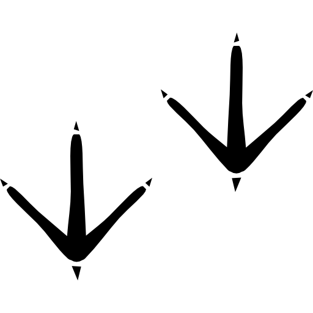
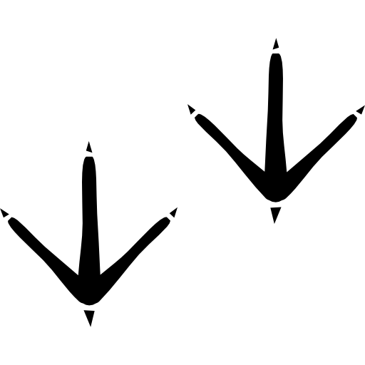

CONOCÉ MÁS A ESTAS 3 ESPECIES Y SUS RAZAS
Raza, variedad, cepa, línea y población son términos frecuentemente utilizados. Son necesarias definiciones para cada uno. Una RAZA es un grupo homogéneo, subespecífico, de animales domésticos que poseen características externas definidas e identificables que permiten distinguirlos a simple vista, de otros grupos definidos de la misma manera en la misma especie; también es un grupo homogéneo sobre el que, debido a la separación geográfica con otros grupos fenotípicamente similares, existe un acuerdo general sobre su identidad separada. De esta manera, las razas han sido desarrolladas en función de diferencias culturales o geográficas, y para satisfacer las necesidades humanas en materia de alimentación y agricultura. En este sentido "raza" no es un término técnico, pero las diferencias, tanto visuales como otras entre las razas, son las responsables de la mayor parte de la diversidad asociada con cada especie animal doméstica. "Raza" es aceptado más como un término cultural que técnico, para poner el acento sobre la propiedad.
El poder de las mascotas: grandes aliadas para mejorar el bienestar
Sin duda, las mascotas se han convertido en un miembro más de la familia. Cada día son más valoradas, pues más allá de brindar diversión y compañía, su presencia tiene un impacto positivo en la salud física y mental de las personas, haciendo que la calidad de vida y la sensación de bienestar aumente. Cualidades de las mascotas como la lealtad, el cariño, la alegría, se transmiten a los seres humanos aportándoles habilidades sociales que se ven reflejadas en una mejor interacción y convivencia con los seres vivos. “La influencia de los animales, sobre todo, en los niños es muy positiva porque los anima a interactuar, a asumir responsabilidades para su cuidado y a fortalecer valores como la solidaridad y el respeto”. La presencia de perros, gatos y otros animales de compañía es determinante en el estado de ánimo. Se ha demostrado que tener una mascota es un gran remedio contra la depresión porque su compañía aumenta la sensación de seguridad y protección. “Interactuar con nuestra mascota provoca la liberación de oxitocina, la conocida hormona del amor, generando ennosotros sentimientos como alegría y confianza”.

 

Ayudarse unos a otros

Las mascotas también traen nuevas responsabilidades. Saber cómo cuidar y alimentar a un animal es parte de ser dueño de una mascota. Los fondos de NIH/Mars estudian los efectos de las interacciones entre humanos y animales para la mascota y la persona. Recuerde que los animales también pueden sentirse estresados y fatigados. Es importante que los niños sean capaces de reconocer los signos de estrés en sus mascotas y saber cuándo no acercarse. Las mordeduras de animales pueden causar daños graves.
En los niños juega un rol aún más importante porque contribuye en el desarrollo educativo y
social; los obliga a asumir responsabilidades y a aprender valores como el respeto por los
demás, aumenta su autoestima y mejora su integración en la familia. Además, los animales
desarrollan la capacidad en los niños de cuidar de alguien y fomentan el sentimiento de
competencia y seguridad: los dos indispensables a desarrollar en el primer ciclo de la vida del niño para conseguir su correcto equilibrio.